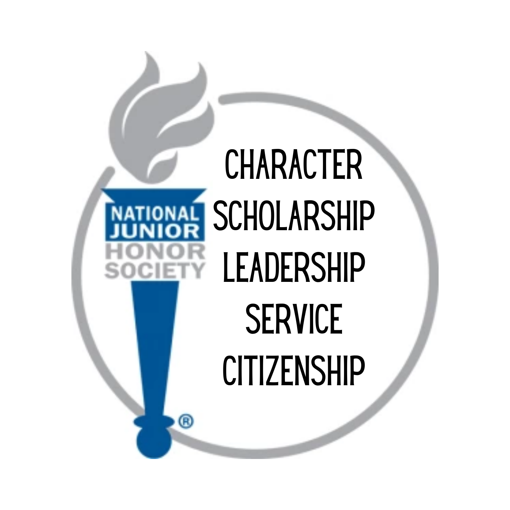

Scholarship • Leadership • Service • Character • Citizenship

NJHS is more than just an honor roll. The Honor Society chapter establishes rules for membership that are based upon a student's NHS/NJHS outstanding performance in the areas of scholarship, service, leadership, and character plus citizenship for NJHS. These criteria for selection form the foundation upon which the organization and its activities are built.
Students who have a standard of excellence, or a higher cumulative average set by the local school's Faculty Council, meet the scholarship requirement for membership. These students are then eligible for consideration on the basis of service, leadership, and character and citizenship for NJHS.
This quality is defined through the voluntary contributions made by a student to the school or community, done without compensation and with a positive, courteous, and enthusiastic spirit.
Student leaders are those who are resourceful, good problem solvers, promoters